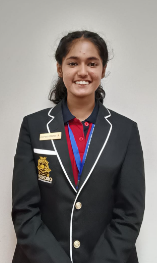

About me
I am a student of the Terna Orchids International School, Koparkhairane, Navi Mumbai. I have extraordinary skills in social studies and english and have a keen interest in learning psychology.
Details
- Name: Natayla Bhardwaj
- Class: 10A
- Roll No: 18
Habits & Hobbies
- Skill Developement: I like to learn musical instruments in free time.
- Peace of Mind: I meditate when I am very stressed.
- Reading: I like to read novels in my free time.